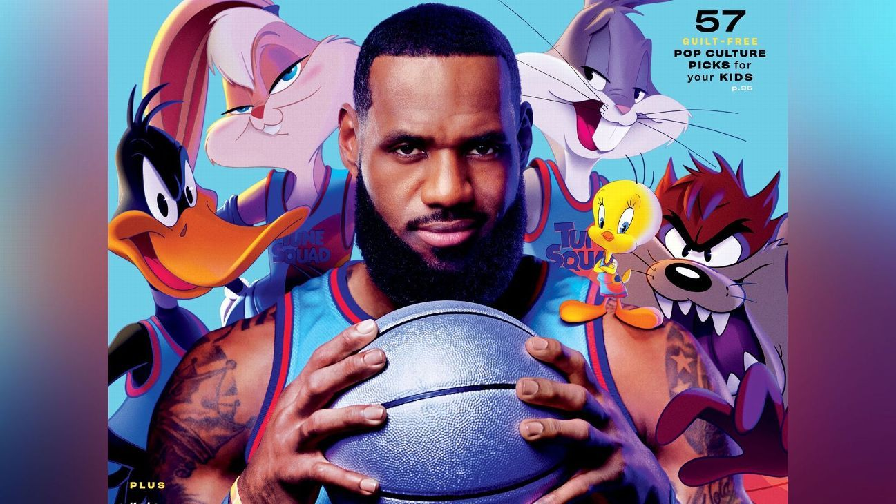

“La primera vez que puse un pie en una cancha de baloncesto me convertí en un hombre de negocios”
A lo largo de su carrera como jugador de baloncesto, a tenido el privilegio de trabajar en proyectos retadores e increíbles
Aquí hay algunos que me gustaría compartir.
SPACE JAM 2
protagonizada por el jugador de baloncesto LeBron James, así como por Don Cheadle y Sonequa Martin-Green.
También está protagonizada por los personajes de Looney Tunes como Bugs Bunny, Lola Bunny, el Pato Lucas y otros más.
James también actúa como productor junto a Ryan Coogler, quien coescribió el guion con Sev Ohanian.

LeBron Raymone James Sr. (Akron, Ohio, 30 de diciembre de 1984)
es un jugador de baloncesto estadounidense que actualmente pertenece a la plantilla de Los Angeles Lakers de la NBA.
Con 2,06 metros de estatura, su posición es la de alero, pero su talento,
versatilidad y poderío físico le permiten jugar tanto de base como de ala-pívot.
James es considerado como uno de los mejores jugadores de baloncesto del mundo y de la historia.2
LEBRON JAMES / CREADOR DE LA MARCA
erradicar la pobreza
En sus redes sociales, el astro de la NBA presentó el proyecto donde ofrecerá educación financiera,
capacitación laboral y actividades recreativas a toda la población de su ciudad nativa.
James ha anotado al menos 10 puntos en más de 1,000 partidos seguidos,
una racha que sigue activa y que comenzó hace más de 15 años.
No ha anotado menos de 10 tantos desde enero de 2007 contra los Milwaukee Bucks.
Una racha que ha sido posible gracias a una combinación casi inimaginable de habilidad, suerte y durabilidad.
Sin noches de descanso, sin torceduras en los tobillos en el primer cuarto y sin expulsiones rápidas.
LEBRON JAMES RECORS
Pidió a la NBA presentarse al Draft con 17 años
Mientras todavía se encontraba en su natal Akron (Ohio) jugando para el St. Mary Vincent, James intentó presentarse al Draft.
Algo que nunca hubiera sido un problema si no hubiese sido por su edad, 17 años,
lo que lo hacía imposible, ya que todavía no había completado el instituto como marcaba la norma.
Por aquel entonces, James ya era bastante conocido entre muchos aficionados al High School y los scouts de NBA y NCAA.
Fue en aquel 2002 cuando protagonizó en su año junior la famosa portada de la revista SLAM poco después de caer en el
campeonato estatal de División II.
“El compromiso es una gran parte de lo que soy y en lo que creo”.